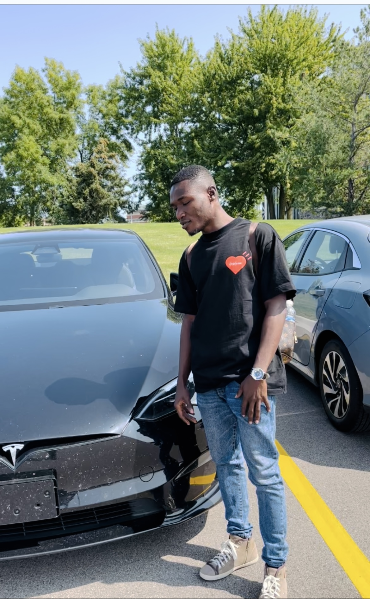

Welcome!
Festus Asante is a graduate student pursuing his Master degree at Grand Valley State University in Allendale, Michigan in the United States of America. His majors are Applied Computer Science and Cybersecurity. He's recently studying System Analysis & Design, Introduction to Software Engineering, and Health & Bioinformatics in the Fall Semester 2024. He's aspiring to become a respected Cybersecurity Analyst and a System Analyst. His interest in computing is to develop video games using programming languages such Java, C++. He's also conversat with other languages including Python, HTML 5/CSS. He's currently working on a term project with team members in the system analysis & design class.
Technical Background
This section provides an overview of my technical background, covering key concepts and experience in areas:
- Proficient in programming languages such as Java, C++, and Python
- Experience with web development using HTML5, CSS, and JavaScript
- Familiar with software development methodologies like Agile and Scrum
- Troubleshooting and Support: provided IT support for network issues, diagnosing such issues related to connectivity, performance, and hardware failures.
- Understanding of cybersecurity principles and best practices
Interest
Here are some of my key interests:
- Video game development and programming
- Cybersecurity and ethical hacking
- Software defined network and machine learning
- Project management and system analysis & design
- Learning new programming languages and frameworks